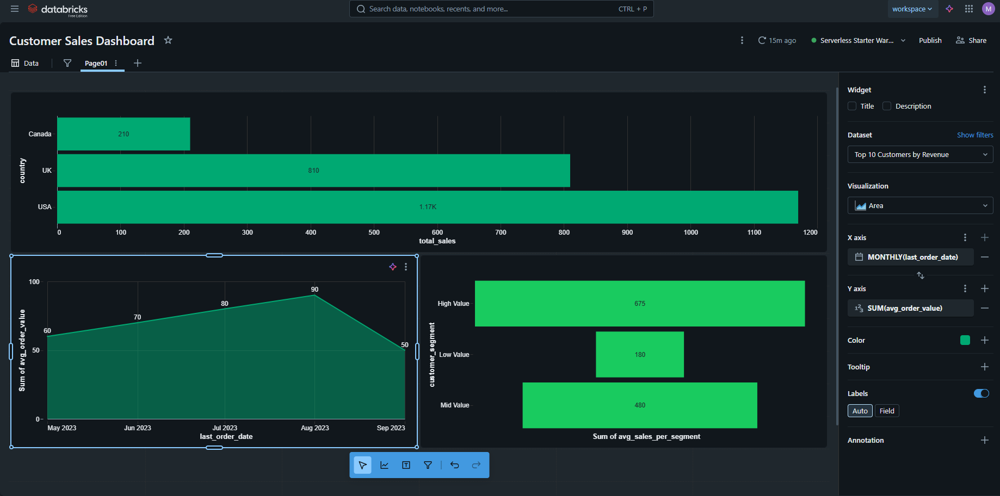

Business Intelligence
Databricks Customer Sales Analysis
SQL cohorts, country totals, recency flags and a dashboard turn synthetic customer records into inspectable analytical outputs.
Synthetic SQL analytics demonstration
Databricks SQL · CSV · Customer analytics
Executive Summary
Explore customer value, geographic revenue concentration and purchase recency in a controlled sales dataset. SQL cohorts, country totals, recency flags and a dashboard turn synthetic customer records into inspectable analytical outputs.
Business Context
The dataset is synthetic and cannot demonstrate actual customer retention or revenue improvement. Recency flags are indicators, not validated churn predictions.
Technical Architecture
- 100 synthetic customer records (repository documentation)
- Databricks SQL cohort / revenue / recency queries
- Dashboard screenshot → analytical interpretation
Engineering Challenges
Analytical definitions and date cutoffs must be explicit. A segment threshold that works in a fixture does not establish a business intervention policy.
Architecture Decisions
SQL keeps grouping and ranking logic inspectable; a CSV fixture bounds the exercise. No production ingestion or real-time serving architecture is established.
Implementation
The repository includes customer_sales_summary_small.csv, SQL Queries and Customer_Sales_Dashboard.png. Workspace execution and dashboard publication were not rerun in this task.
Reliability and Security
The synthetic dataset avoids using real customer information. Production adaptation would need access controls, data contracts and validation of revenue definitions.
Business Value
Demonstrated artifact scope is customer segmentation and revenue/recency analysis, not improved customer lifetime value. No financial uplift is reported.
Evidence and validation boundary
Status: Synthetic SQL analytics demonstration. Reviewed 22 November 2026.
Reviewed repository revision: 9f9d9fb1f708. Code presence is distinct from executed runtime behavior.

Current local test outcomes and unexecuted checks. CI and test evidence is separated from production readiness; the validation record includes retrieved checks at the reviewed revision.

Future Improvements
Add query-level assertions, versioned date cutoffs, source-to-total reconciliation and reproducible workspace instructions.